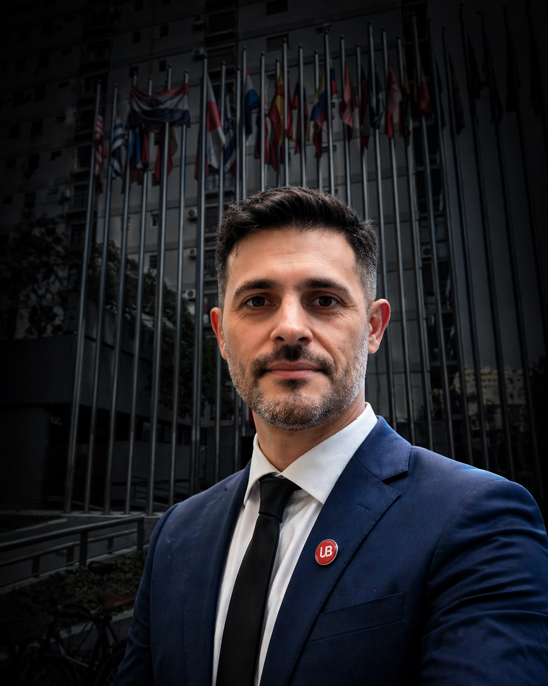

Diagnóstico Logístico Integral
Evaluación completa de tu operación para detectar oportunidades de mejora, riesgos y cuellos de botella.
Ayudo a empresas a mejorar su operación logística, tomar mejores decisiones y lograr resultados sostenibles a través de un enfoque estratégico y práctico.

Soluciones adaptadas a las necesidades de tu negocio para optimizar cada eslabón de tu operación.
Evaluación completa de tu operación para detectar oportunidades de mejora, riesgos y cuellos de botella.
Diseño de estrategias y estructuras operativas eficientes, adaptadas a tus objetivos y recursos.
Mejora de procesos, distribución de tareas, uso de recursos e infraestructura para aumentar la productividad.
Definición de indicadores clave (KPIs) y tableros de control para monitorear resultados y tomar mejores decisiones.
Trabajo con un enfoque medible y orientado a generar impacto en tu operación.
Mi objetivo es que cada proyecto se traduzca en una operación más ordenada, rentable y preparada para crecer.
Marcos Conti Consultor en Logística EstratégicaSoy Licenciado en Logística Integral y cuento con experiencia acompañando organizaciones en la mejora de sus procesos, combinando visión estratégica, conocimiento operativo y un fuerte enfoque en resultados.
Trabajo junto a empresas que necesitan ordenar, optimizar y profesionalizar su operación logística para crecer con mayor control y eficiencia.
Licenciado en Logística Integral
Experiencia en operaciones logísticas
Conocimiento de entornos productivos
Enfoque práctico y orientado a resultados
Herramientas y enfoques que permiten ordenar, medir y mejorar la operación.
Definición y seguimiento de métricas para entender el desempeño real de la operación.
Visualización de información crítica para tomar decisiones más rápidas y efectivas.
Enfoque ordenado para detectar problemas, priorizar acciones y sostener resultados.
Un proceso claro y colaborativo para lograr mejoras sostenibles.
Analizo tu operación actual, desafíos y objetivos del negocio.
Evalúo datos, procesos y recursos para identificar oportunidades.
Diseño un plan de acción personalizado con soluciones viables.
Acompaño la puesta en marcha y trabajo junto al equipo.
Monitoreo resultados, ajusto y aseguro la mejora continua.
Agendá una llamada y conversemos sobre cómo puedo ayudarte a optimizar tu logística.